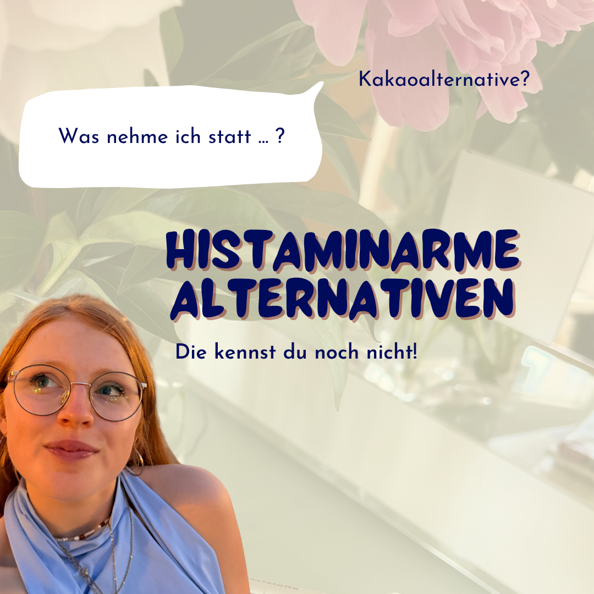
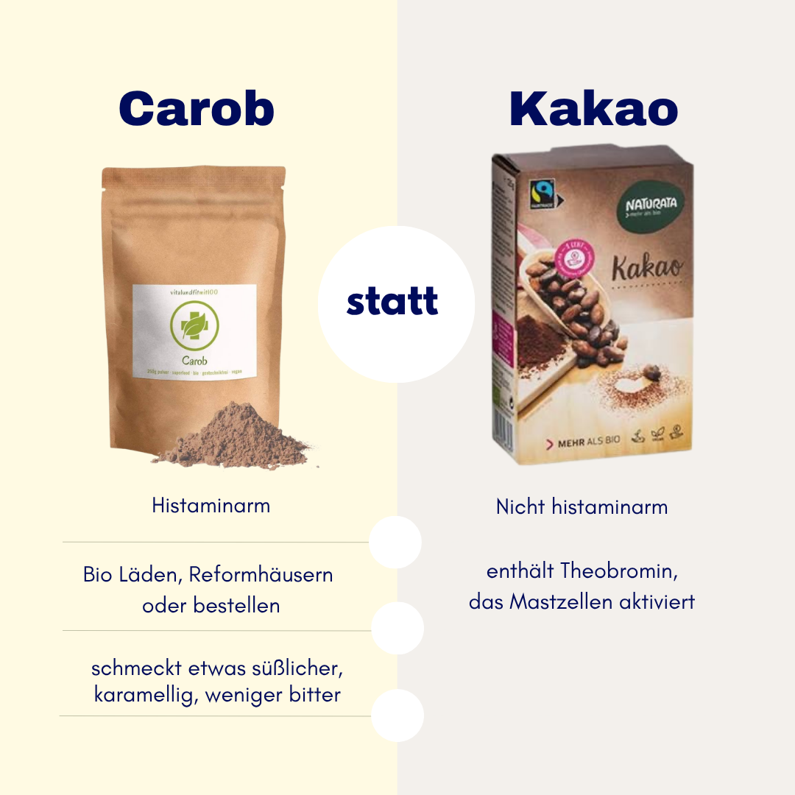
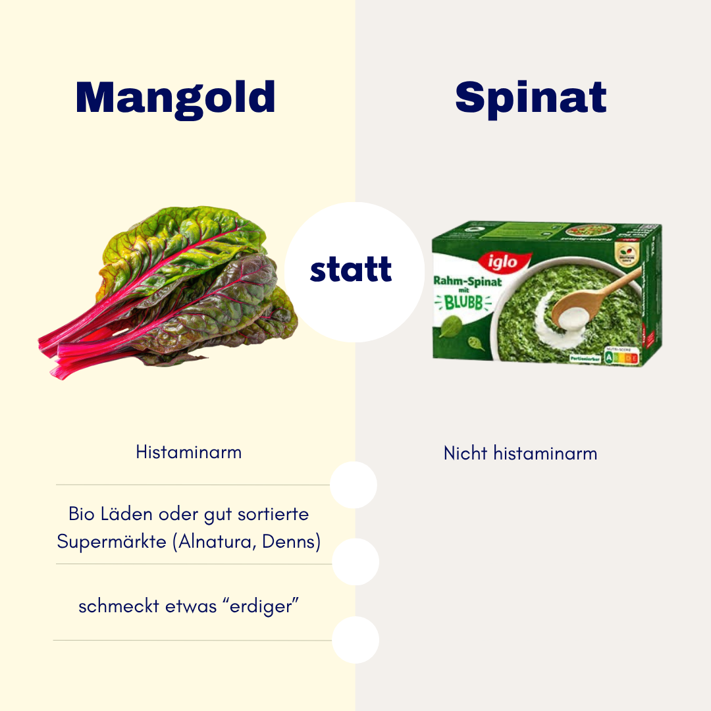
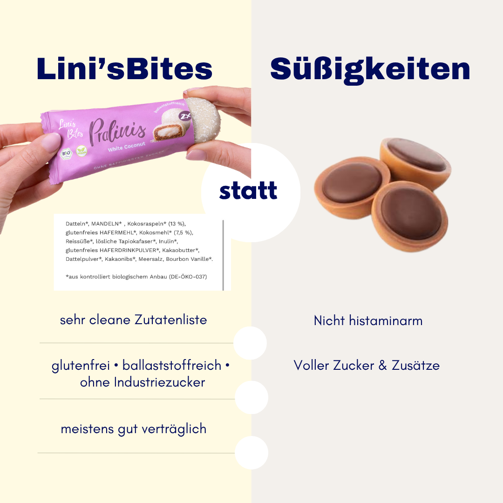
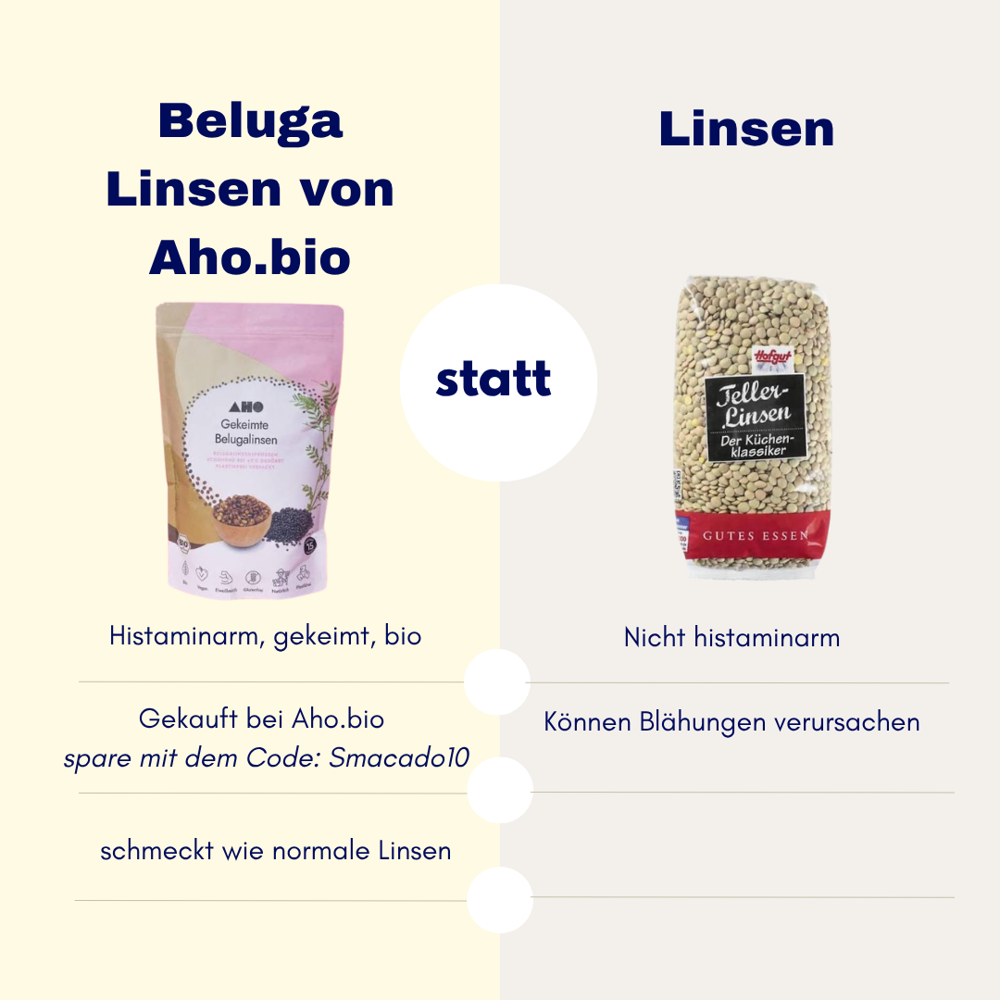
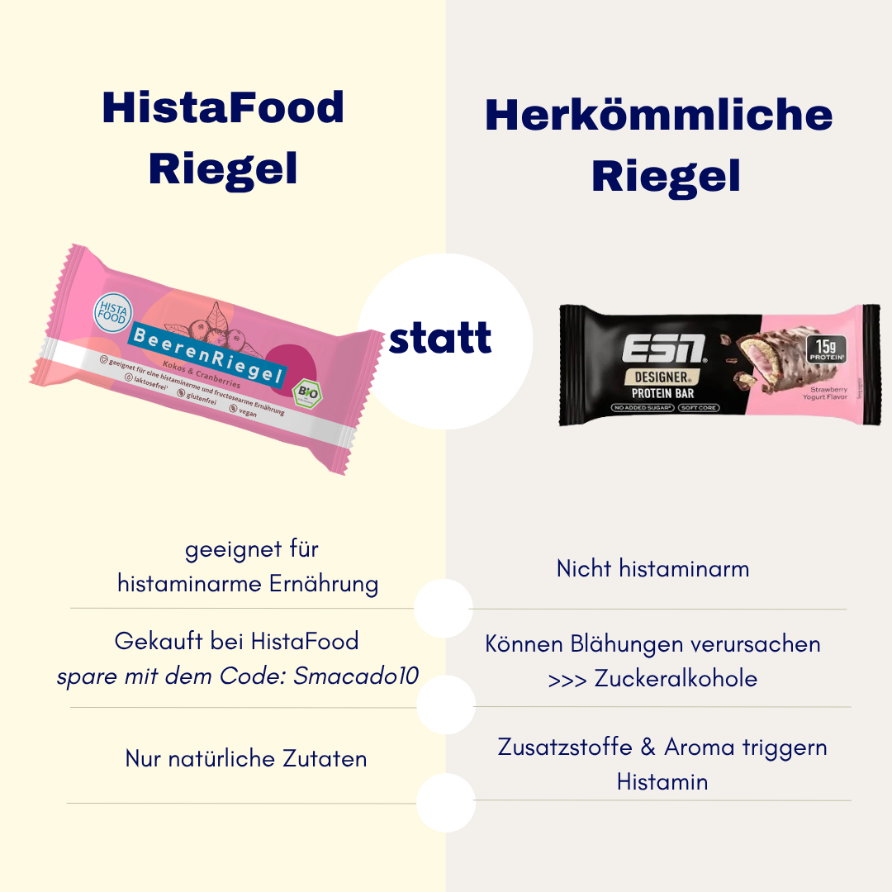
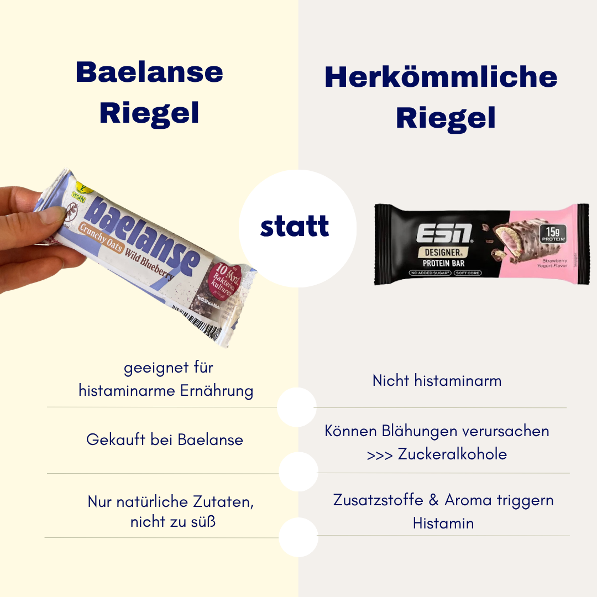
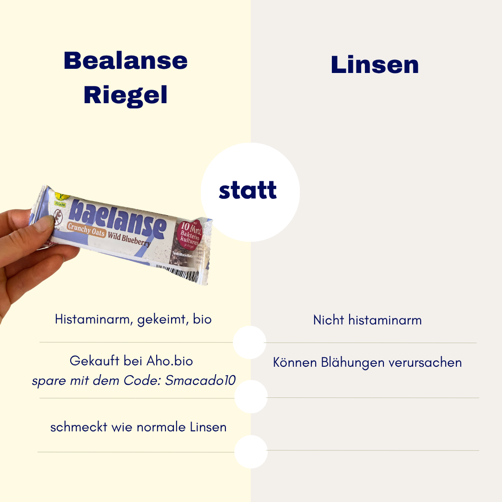
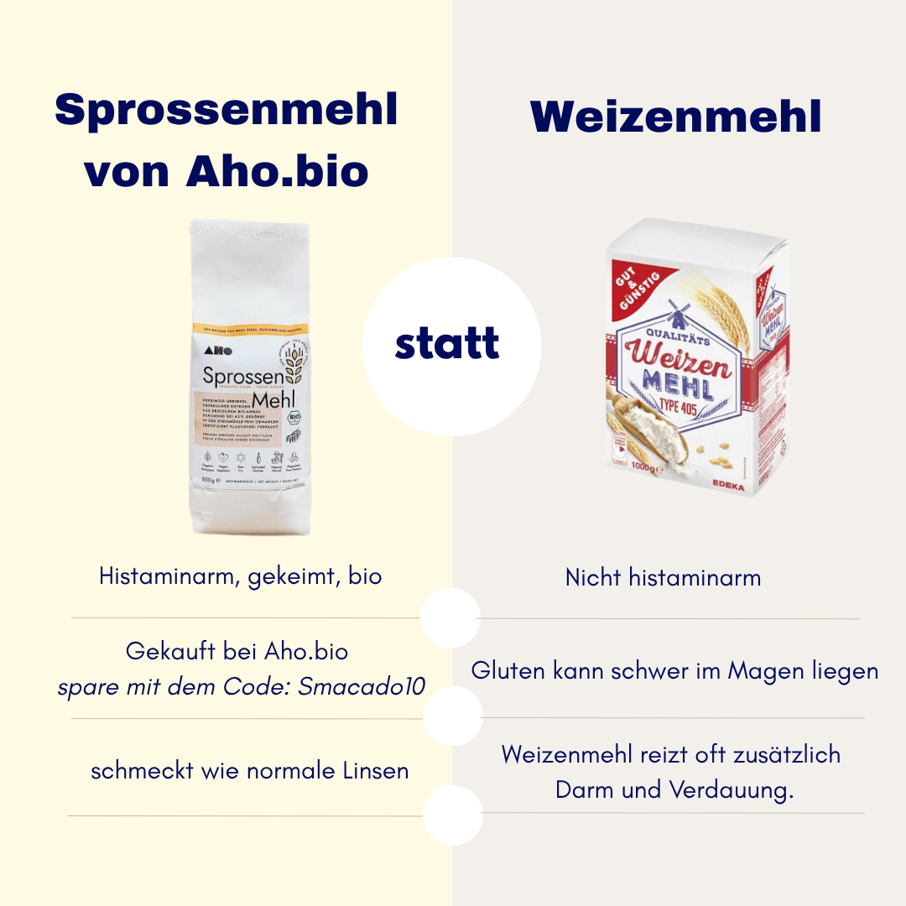
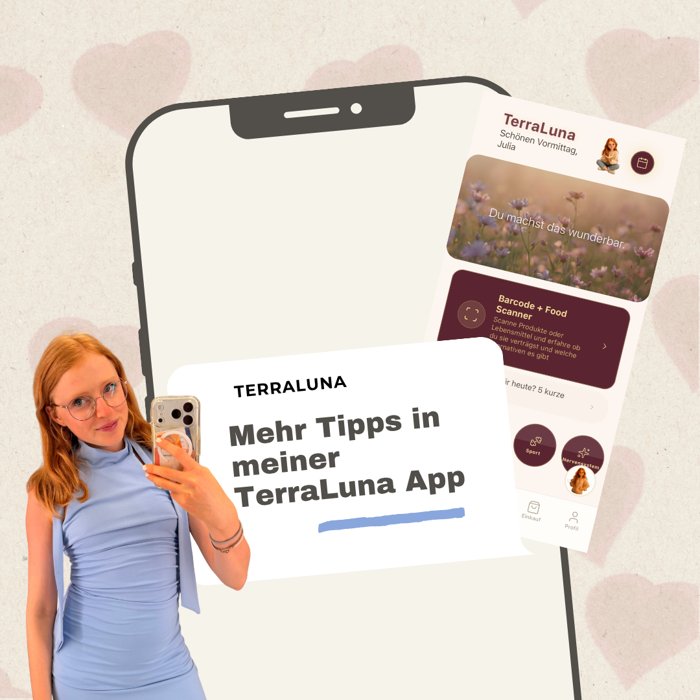

Cover

Carob statt Kakao

Mangold statt Spinat

Lini's Bites statt Süßigkeiten

Beluga Linsen statt Linsen

HistaFood-Riegel

Baelanse-Riegel

Baelanse-Vergleich

Sprossenmehl statt Weizenmehl

TerraLuna App (CTA)
Instagram folgen (CTA)